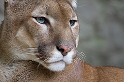

Todos los felinos son carnívoros y, en la mayoría de los casos, son predadores que acechan a sus presas de manera solitaria. Los felinos salvajes están presentes en África, Europa, Asia y América. Algunos están habituados a los hábitas boscosos, otros a los ambientes áridos y algunos incluso a los humedales y las montañas. Sus patrones de actividad varían desde los nocturnos hasta los crepusculares y los diurnos, dependiendo de las presas que prefieran.
| Nombre científico | Nombre común | Longitud de cabeza y cuerpo | Longitud de cola | Peso | Estado de conservación | Imagen |
|---|---|---|---|---|---|---|
| Puma concolor | puma,león de montaña | 150 -170 cm | 70-100 cm | 100-120 kg | LC (preocupación menor) |  |